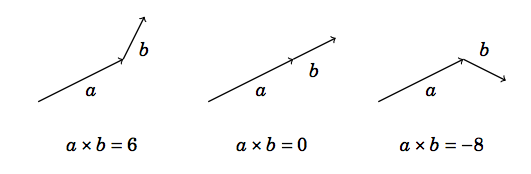
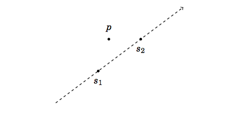
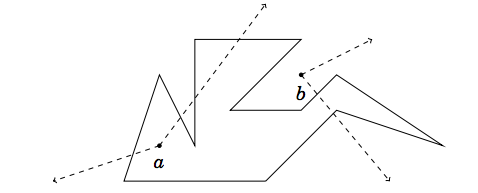
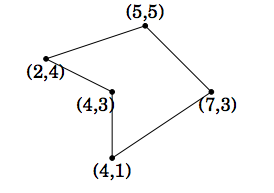
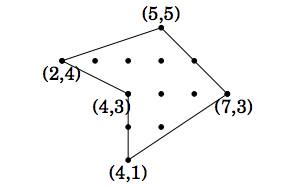
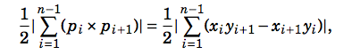
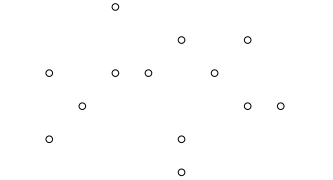
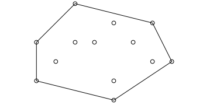
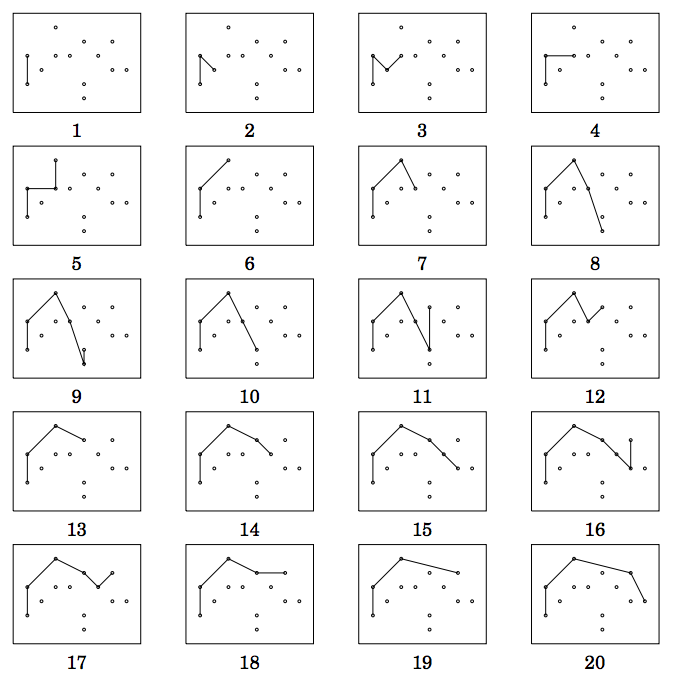

7. Геометрични задачи [AL 29, p. 265]
План:
Задачи за домашно 7 и 8
Координатна система, точки и вектори
Отсечки и многоъгълници
Разстояния и лица
Изпъкнала обвивка
Задачи за домашно 9 и 10
** Координатна система, точки и вектори
- Точки и линии, a = (a1, a2),
b = (b1, b2)
-- векторно произведение (cross product)
axb = a1b2 - a2b1

дясна координатна система
-- положение на точка относно права

c = (p - s1) × (p - s2)
показва местоположението на точката p относно правата, определена от
точките s1 и s2. Ако c
> 0, p се намира от лявата страна, ако c
< 0, p е от дясната страна и ако c =
0, точките s1, s2
и p лежат на една права.
-- Скаларно произведение a.b = a1b1
- a2b2
перпендикуляни вектори a.b = 0
- Пресичане на отсечки (Line Segment
Intersection)
-- Line–line
intersection
- Многоъгълници (не самопресичащи се)
-- Точка в многоъгълник

- Разстояние между две точки, дължина на
вектор
Евклидово (l2) разстояние: e2 = (a1
- a2)2 + (b1 - b2)2
Манхатън (l1) разстояние: m = |a1
- a2| + |b1 - b2|
Чебишево (linf)разстояние: c = max{|a1
- a2|, |b1 - b2|}
-- Ориентирано лице на многоъгълник (Shoelace
Formula) [AL p. ]

A = |x1y2 + x2y3
+ x3y4 + ... + xn-1yn
+ xny1 - x2y1
- x3y2 - ... - xnyn-1
- x1yn|/2

Пример: |(2·5−5·4)+(5·3−7·5)+(7·1−4·3)+(4·3−4·1)+(4·4−2·3)|/2
= 17/2
(Polygon
Area)
Теорема на Пик. Нека координатите на върховете на непресичащ
се многоъгълник са цели числа. Тогава лицето на многоъгълника е S
= a + b/2 - 1, където е a броят на целите
точки вътре в многоъгълника и b е броят на целите точки на
границата на многоъгълника.
Пример: 6 + 7/2 - 1 = 17/2
** Изпъкнала обвивка на множество от точки
(Convex
Hull) [AL р. 278]
Изпъкналата обвивка за дадено множество от точки P е изпъкнал
многоъгълник с минимално лице, който съдържа изцяло множеството P.

Задача: Дадено е множество от точки в равнината. Да се намери
затворената обвивка на множеството.
Алгоритъм на Андрю - O(n log n)

Телерик I,
Телерик II
Други
алгоритми
Най-близка двойка точки (Closest Points)
[AL p. 277]
Х. Борисов, И. Тодоров, Геометрията в състезателното програмиране, I
част, II
част, 2009.
Три-ъгълници
https://www.hackerrank.com/fifth-interuniversity-nbu-programming-contest
Брой триъгълници
https://www.hackerrank.com/nbu-march-2020-programming-contest
Още геометрични задачи